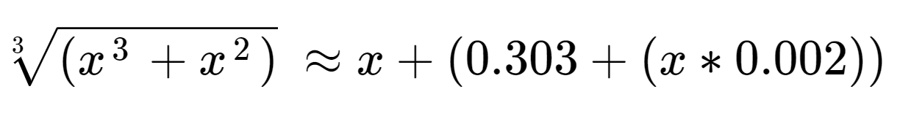
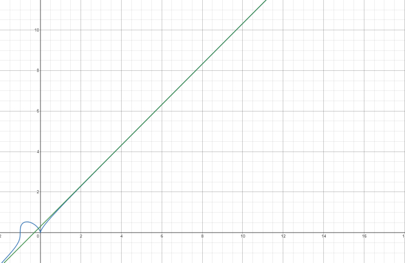

formulas i've found:

This works no matter how you solve it but multiplying (x-1) as a binomial by the summation results in
something like (in the case of x = 3 and y = 4) 3^4 = 3^4 - 3^3 + 3^3 - 3^2 + 3^2 - 3^1 + 3^1 which cancels to 3^4 = 3^4.
Solving for (x-1) first and then solving for the rest gives the same value but doesn't result in an identity. In the case of
x = 3 and y = 4, 3^4 = 3+2(3^3+3^2+3^1), which is also correct.
This one is just 10a+b^2, but it still works as a shortcut for squaring numbers (more steps but easier numbers). t = tens place x and o = ones place of x.

This is unbelievably useless, but it's still cool

